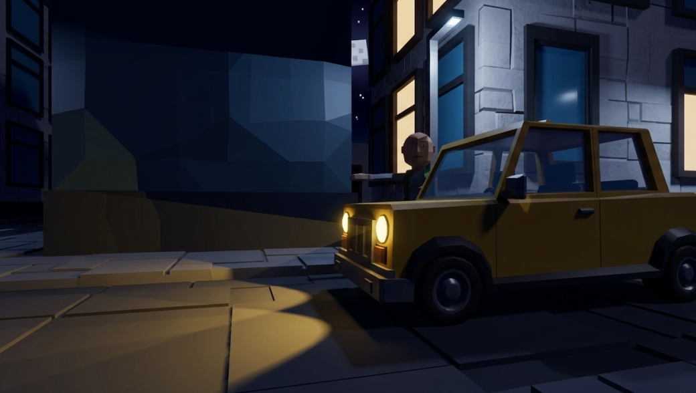
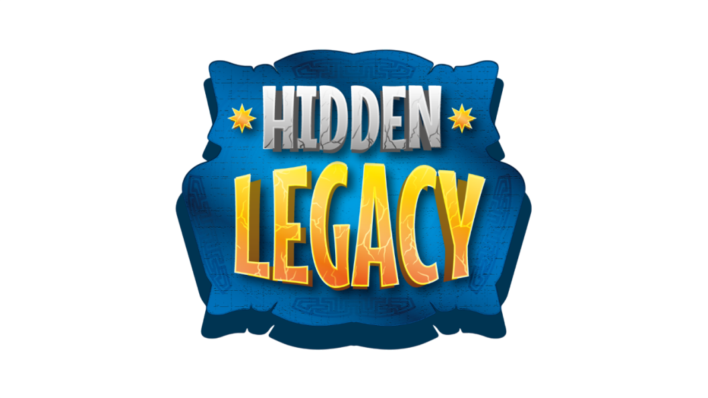

¡Hola! 👋 Soy Sebastian Builes
Unity Game Developer creando experiencias interactivas
Unity
C#
Gameplay Programming
Git/GitHub
"Transformo ideas en mecánicas de juego."
🚀 Proyectos

🚕 Taxi Oscuro
Juego donde transportas pasajeros mientras escapas de una criatura en la oscuridad.
Rol: Programador de gameplay
Jugar en itch.io
⚽ Prototipo de Fútbol
Sistema de control de jugador y balón con físicas en Unity.
Rol: Programador de movimiento
Jugar en itch.io👤 Sobre mí
Soy desarrollador de videojuegos en Unity enfocado en gameplay. Me apasiona crear sistemas interactivos que se sientan bien al jugar y participar en game jams para mejorar mis habilidades.